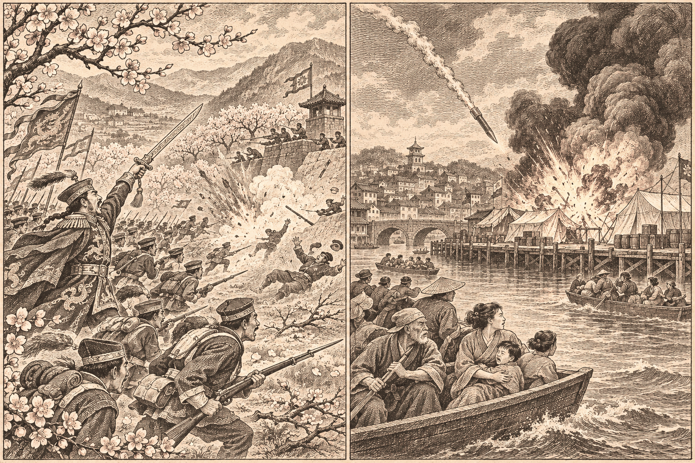

オリョルッル、桃谷に開戦 首都前で八千八百人
オラニウム、朱川の町とニュータウンを占領
オリョルッルが五つ目の戦場を開き、開戦のその日に桃谷軍を首都ナンサプの手前で打ち破った 北東では、オラニウム連邦が朱川共和国の町とニュータウンを占領し、ミサイルで兵站基地二つと軍港を焼き払った

【総合部】オリョルッル王国が第180期、桃谷連邦共和国との戦端を開いた。王国はその日のうちに、首都ナンサプの北西の前線で桃谷の歩兵へ攻めかかり、六千二百人の損害を与えた。反撃で五百人を失ったが、押し返してきた桃谷の歩兵には逆に二千六百人を与え、この一日で桃谷の損害は八千八百人、オリョルッルは二千七百人にのぼった。前線に立った王国の第六軍は、宝具「戦神の剣」を帯び、兵の練度を一段上げての突撃だった。
桃谷は、すでにオラニウム連邦とも戦っている。人口は七万三千百人、兵力は九万七千三百人。そこへ、兵力七十七万九千三百人、人口百九十一万八千七百人という世界最大級の国が加わった。桃谷は首都ナンサプの手前に部隊を置き、徴兵と地ならしで守りを固めようとしたが、開戦初日の損害で人口はさらに四千五百人減った。オリョルッルにとっては、守りではなく自ら仕掛けた五つ目の交戦国である。詳報は5面。
オラニウム、朱川の町とニュータウンを占領 ミサイルで兵站と軍港を焼く
北東では、オラニウム連邦が朱川共和国の町とニュータウンを相次いで占領した。町では食糧四万九千九百トンが徴発された。オラニウムはさらに、朱川の港町にミサイルを連ねて撃ち込み、兵站基地二つと軍港を一帯もろとも焼き払った。そこに布陣していた朱川の部隊は全滅した。前線では朱川の砲兵と歩兵が全滅し、装甲兵に挑んだ歩兵も反撃で散った。
朱川の人口は、前期の三万二百人から二万千二百人へ、九千人減った。兵力も八千四百人まで減った。首都丹城は朱川の手に残るが、周りの町とニュータウンは次々とオラニウムの旗に変わっている。朱川はこの期、オラニウムに停戦の意思を打診した。攻め返す余力は乏しい。詳報は5面、暮らしは8面の国特集で伝える。
白波も停戦を打診
同じ期に、白波王国もチェス＝シロバキア共和国へ停戦の意思を打診した。朱川と合わせて二件だが、いずれも相手の承諾があって初めて成り立つ。返事はまだ届いていない。国際面の詳報は2面。